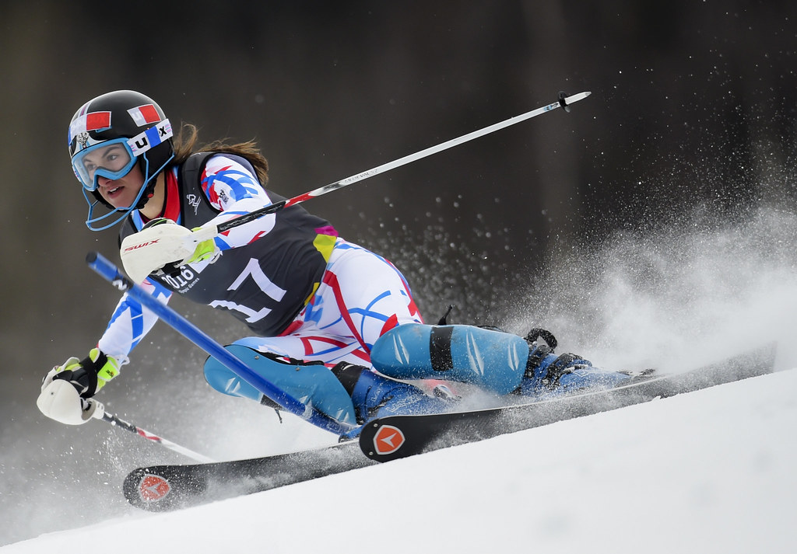

Nordic skiing
Nordic, or classic, skiing consists of techniques and events that evolved in the hilly terrain of Norway and the other Scandinavian countries. The modern Nordic events are the cross-country races (including a relay race) and ski-jumping events. The Nordic combined is a separate test consisting of a 15-km cross-country race and special ski-jumping contest, with the winner determined on the basis of points awarded for performance in both events.

There are numerous factors that differentiate the various individual cross-country races, such as the type of start, the style of skiing, and the distance. With the exception of one event, all cross-country races begin with a staggered start in which competitors are spaced 30 seconds apart. Skiers are thus racing against the clock, not each other directly. Races with pursuit formats, in which one racer or team is given a head start and the other racer or team attempts to catch up, typically involve two runs, with the racers or teams exchanging roles; ultimately, the skiers race against each other rather than the clock. Sprint races of about a kilometre are growing in popularity.
The other important aspect of a cross-country race is the style of skiing. Until the 1970s there was only one style, now called classic, in which skiers follow parallel tracks. A more efficient type of cross-country skiing was popularized by American Bill Koch when he used a “skating” stride, pushing his skis outside the parallel tracks. This innovative style is now used in certain cross-country events. The skating technique requires longer poles and shorter skis than the classic style. It also requires higher boots that give improved ankle support.

Alpine skiing
By the start of the 20th century, a second upstart style of skiing competition had joined the older established cross-country skiing races and ski-jumping contests of Nordic skiing. The downhill races of this Alpine skiing, developed in the mountainous terrain of the Alps in central Europe, were generally dismissed by Nordic skiers, who considered their annual cross-country and ski-jumping events at the Holmenkollen Ski Festival near Oslo (from 1892) and the Nordic Games (held quadrennially from 1901 to 1917 and 1922 to 1926) to be the only proper representation of the sport of skiing. In 1930, however, the Nordic skiing countries of Norway, Sweden, and Finland finally withdrew their resistance and allowed Alpine events to be fully sanctioned by skiing’s international governing body, the Fédération Internationale de Ski (FIS; International Ski Federation), which was founded in 1924.
Modern Alpine competitive skiing is divided into four races—slalom, giant slalom, supergiant slalom (super-G), and downhill—each of which is progressively faster and has fewer turns than its predecessor on the list. Super-G and downhill are known as speed events, which are contested in single runs down long, steep, fast courses featuring few and widely spaced turns. The slalom and giant slalom are known as technical events, which challenge the skier’s ability to maneuver over courses marked by closely spaced gates through which both skis must pass; winners of these events are determined by the lowest combined time in two runs on two different courses. The Alpine combined event consists of a downhill and a slalom race, with the winner having the lowest combined time.
Alpine skiing made its Olympic debut at the 1936 Winter Games in Garmisch-Partenkirchen, Germany, where a combined race (featuring both downhill and slalom events) was held. The first giant slalom Olympic competition took place at the 1952 Winter Games in Oslo, and the supergiant slalom was added at the 1988 Winter Games in Calgary, Alberta, Canada. That same year the combined event, which had been removed from the roster of Olympic events in the 1940s, returned as an official event. It was dropped for the 1998 Winter Games in Nagano, Japan, however, in favour of two new events—the combined slalom (a slalom run coupled with a giant slalom run) and the combined downhill (comprising a supergiant slalom run and a downhill run). The 2002 Winter Games in Salt Lake City, Utah, once again featured an event that combined one downhill and two slalom runs. The 2006 Winter Games in Turin, Italy, included combined downhills and slaloms for men and women.